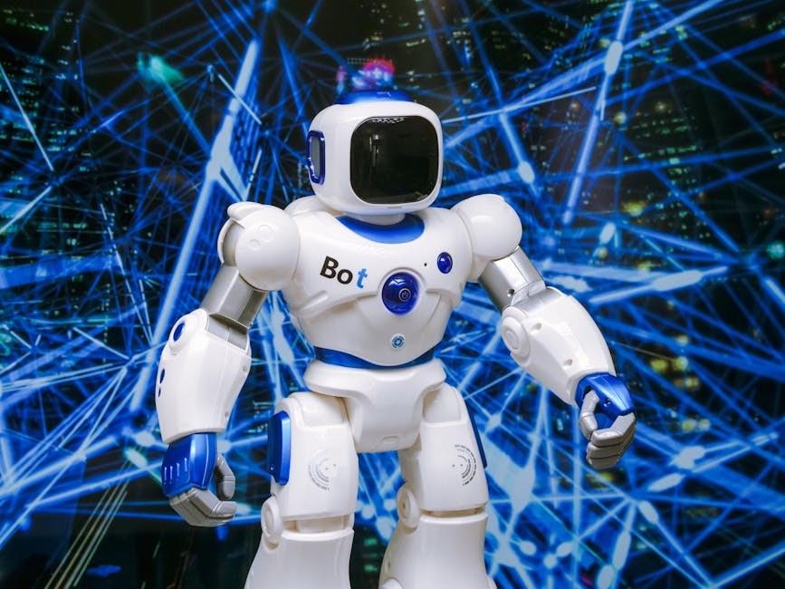

Imagine a world where robots don't just follow pre-programmed commands, but can learn, adapt, and even make decisions on their own. Sounds like science fiction, right? Well, thanks to Artificial Intelligence (AI), this future is rapidly becoming our present! From navigating busy streets to assisting in complex surgeries, AI is the 'brain' that gives robots the ability to perceive, reason, and interact with the world in ways we once only dreamed of. If you've ever wondered how these smart robots work, or what makes them so intelligent, you're in the right place. Let's dive into the fascinating intersection of artificial intelligence and robotics!
What is Artificial Intelligence (AI)?
At its core, Artificial Intelligence is about making machines think and act like humans. It's a broad field of computer science that aims to create intelligent machines capable of performing tasks that typically require human intelligence. Think about it: when you learn to ride a bicycle, you process information (balance, speed, direction), make decisions, and adapt your actions. AI tries to replicate these cognitive functions in computers and robots.
AI vs. Human Intelligence: A Quick Look
While AI strives to mimic human intelligence, there are key differences. Humans use intuition, emotions, and common sense – things AI is still developing. However, AI excels in processing vast amounts of data, performing complex calculations, and identifying patterns far beyond human capabilities. When we talk about AI in robotics, we're giving robots the tools to interpret sensor data, understand their environment, and make choices without explicit, step-by-step instructions for every possible scenario.
The Brains Behind the Bots: How AI Powers Robots
So, how does a robot actually become "smart"? It's not magic, but a combination of advanced algorithms and powerful computing. The two most important concepts that empower robot intelligence are Machine Learning and Neural Networks.
Machine Learning: The Robot's Learning Curve
Imagine teaching a child to identify different animals. You show them pictures, tell them the names, and correct them when they make a mistake. Machine Learning (ML) is very similar. It's a subset of AI that allows systems to learn from data without being explicitly programmed. Instead of writing code for every possible situation, we feed the machine lots of data, and it learns to find patterns and make predictions or decisions.
There are different ways robots learn through ML:
- Supervised Learning: The robot learns from labelled data. For example, showing a robot thousands of images of "cat" and "not-cat" until it can identify cats on its own.
- Unsupervised Learning: The robot finds patterns and structures in unlabelled data on its own. It's like finding groups of similar items without being told what those groups should be.
- Reinforcement Learning: This is like training a pet with rewards. The robot learns by trial and error, receiving "rewards" for desired actions and "penalties" for undesired ones. This is crucial for robots learning to navigate complex environments or perform intricate tasks.
Neural Networks: Mimicking the Human Brain
Artificial Neural Networks (ANNs), often just called Neural Networks, are at the heart of much of today's advanced AI. Inspired by the structure and function of the human brain, ANNs consist of interconnected "neurons" (mathematical functions) organized in layers. When a robot "sees" an image or "hears" a sound, this data passes through these layers, with each neuron processing a piece of information and passing it on. By adjusting the connections between these neurons (a process called "training"), the network learns to recognize patterns, classify objects, and even generate new information.
"AI is not just about building smart machines; it's about building machines that can learn and adapt, opening up a universe of possibilities for how robots can interact with and improve our world."
Where Do We See Smart Robots in Action?
AI-powered robots are no longer confined to research labs; they are making a tangible impact across various industries and aspects of daily life:
- Industrial Automation: In factories, AI-driven robots perform precision tasks like welding, assembly, and quality control with incredible speed and accuracy, far surpassing human capabilities.
- Autonomous Vehicles: Self-driving cars use AI to perceive their surroundings (other cars, pedestrians, traffic signs), make navigation decisions, and react to unexpected situations.
- Healthcare: Robotic surgical assistants, AI-powered diagnostic tools, and companion robots for the elderly are revolutionizing patient care and support.
- Exploration: Robots equipped with AI explore distant planets, deep oceans, and hazardous environments, collecting data and making discoveries where humans cannot go.
- Education and Home: From interactive educational robots that teach coding and STEM concepts to smart vacuum cleaners, AI is making our learning and living spaces more intelligent.
Building Your Own Robot Intelligence: A Glimpse into Coding AI
While building a full-fledged AI system is complex, understanding the basic principles of how a robot might make a simple decision based on sensor input is a great start. Here's a very simplified Python example showing how a robot might react to detecting an obstacle using a hypothetical sensor:
# This is a simplified example, not a full robot program!
def get_distance_from_sensor():
"""Simulates getting a distance reading from a robot's sensor."""
# In a real robot, this would read from a physical sensor (e.g., ultrasonic, LiDAR)
import random
return random.randint(1, 100) # Returns a random distance between 1 and 100 cm
def robot_decision_making():
threshold_distance = 20 # If obstacle is closer than 20 cm, take action
current_distance = get_distance_from_sensor()
print(f"Sensor detected an object at {current_distance} cm.")
if current_distance < threshold_distance:
print("Obstacle detected! Initiating evasive maneuver: STOP and TURN.")
# In a real robot, this would involve sending commands to motors
else:
print("Path clear. Continue forward.")
# In a real robot, this would involve sending commands to motors
# Run the robot's decision process
robot_decision_making()
robot_decision_making() # Let's try again!
This simple code demonstrates a basic "if-else" decision, which is a fundamental building block of even more complex AI behaviors. Real AI involves much more sophisticated algorithms, often using machine learning models to interpret sensor data, predict outcomes, and choose the best action from many possibilities.
The Future is Now: What's Next for AI in Robotics?
The future of AI in robotics is incredibly exciting. We can expect robots to become even more autonomous, capable of complex reasoning, natural language understanding, and even displaying forms of "emotional intelligence." Imagine robots that can collaborate seamlessly with humans, learn new skills on the fly, and adapt to completely new environments without prior programming. From personalized healthcare companions to advanced space explorers, the possibilities are limitless.
Challenges and Opportunities for Young Innovators
While the future is bright, there are challenges. Developing robust AI requires vast amounts of data, powerful computing, and careful ethical considerations. For young innovators like you, this presents an incredible opportunity! Learning about artificial intelligence, machine learning, and neural networks now will equip you with the skills to shape this future. Robotics is a hands-on field, and combining it with AI allows you to build machines that don't just move, but truly think.
Conclusion
Artificial Intelligence is the invisible force that breathes life and intelligence into our robotic friends. It's what transforms simple machines into smart, adaptable, and incredibly useful companions. As AI continues to evolve, so too will the capabilities of robots, pushing the boundaries of what's possible and redefining our interaction with technology.
Ready to explore the world of AI and robotics yourself? Join the MakerWorks community! Check out our workshops, courses, and kits designed to help you get hands-on with robotics and learn the foundations of programming and artificial intelligence. Start building your own smart robots today and be a part of shaping tomorrow's intelligent world!